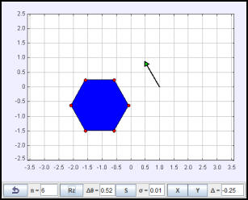

Affine transformations are used to rotate a polygon and a vector.
The Affine Transformations in Two Dimensions example shows how to define objects using homogeneous coordinates and how to manipulate them using affine transformations represented by matrices. The model transforms a polygon with n vertices and an arrow. Data for the polygon is stored in a double[n][3] array and data for the arrow components is stored in a double[3] array. Each polygon vertex transforms as a 3D point located at (x,y) and is stored using homogeneous 2D coordinates as double[] {x,y,1}. The arrow components (vx, vy) are stored in homogeneous coordinates as double[] {x,y,0}. Because the arrow represents a vector, it can change direction but remains invariant under translation.
The Affine Transformation in Two Dimensions example uses matrix multiplication to directly transform data in the model. The polygon and the arrow can also be transformed using property fields in their inspector panels. An integer value Transform property will rotate a 2D Element by the given number of degrees and a double value will rotate the Element by the given number of radians. The position property fields translate a 2D Element. Behind the scene EJS converts these property values into affine transformations just as we have done in this model. The EJS 2D Implementation page describes the algorithms that have been implemented within EJS to produce 2D transformations.
See the 2D Transformations page on the EJS Wiki for more complete information.
The following EJS models are described in Chapter 17 of the EJS adaptation of An Introduction to Computer Simulation Methods available in the ComPADRE digital library.
The Affine Transformation in Two Dimensions example was developed by Wolfgang Christian using the Easy Java Simulations (EJS) modeling tool version 4.3. You can examine and modify the model for this simulation if you have EJS installed by right-clicking within the program and selecting "Open Ejs Model" from the pop-up menu.
Information about EJS is available at: <http://www.um.es/fem/Ejs/> and in the OSP ComPADRE collection <http://www.compadre.org/OSP/>.